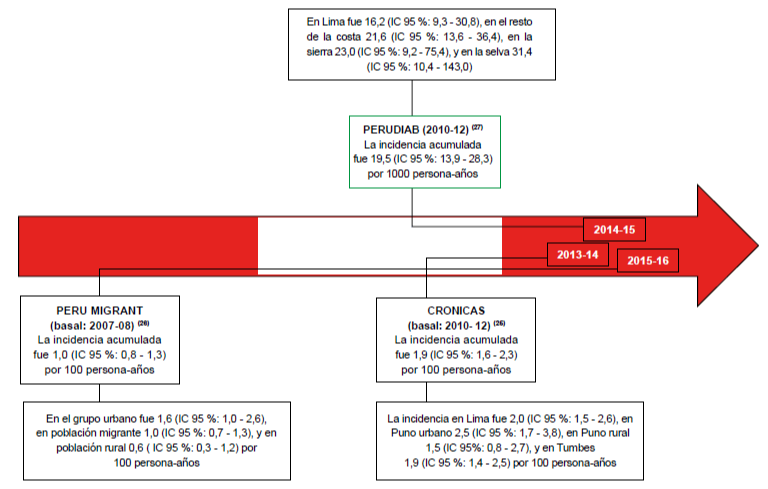

La comparación con los estándares nos permite dimensionar los diversos impactos causados por la diabetes Mellitus tipo 2, enfermedades relacionadas con esta y ver cómo nos coloca como país. Además la comparación con estándares respecto a cómo el Perú avanzó en los últimos años respecto a la diabetes nos indica la eficacia de los programas implementados por el gobierno.
Marco estadístico donde se muestra los índices de masa corporal de países americanos en mayores de 18 años en hombre y mujeres. Según la OMS Estados Unidos lidera en esta infografía con hombres y mujeres en obesidad; mientras que el Perú tiene un IMS en mujeres de 26.5, dato que las coloca en el grupo de personas con sobrepeso.
Estas estadísticas nos especifica y muestra que el sexo femenino es el que mayor índice de obesidad presenta en nuestro país durante los anteriores 5 años.
Según la MedLinePlus (Biblioteca Nacional de Medicina de los EE. UU.), las personas con obesidad tienen mayor riesgo de sufrir problemas de salud, entre los que encontramos la diabetes.
Como se puede ver en el gráfico la prevalencia de la diabetes en el Perú se ha incrementado lo que nos indica que las medidas adoptadas para su prevención no han sido eficaces. Además este incremento también puede estar relacionada con el aumento del consumo de alimentos procesados que se vio antes. Las propuestas implementadas pudieron no haber sido adecuadas a estos cambios en los hábitos alimenticios que se han visto durante los últimos años.
Es diferente de la complicada etiqueta de información nutricional –como el GDR– que se imprime en la parte posterior o lateral de los productos. El fin de los octógonos es informar al consumidor para que tome mejores decisiones de compras para él y su familia.
En la actualidad, además de Chile, el Perú ha sido el primer país en adoptarlos en junio del 2018, aunque Uruguay decidió adoptar la medida y Canadá se acerca a la aprobación.
Estimaciones hechas por Axer consultores indican que en promedio el 84% de los consumidores cambiaría sus hábitos de compra, sin embargo estos serían cambios a corto plazo. Los octógonos al inicio impactan al consumidor pero con el tiempo este puede normalizarlos lo que disminuiría su efecto. Esto también se debe a que muchos consumidores no saben en verdad la implicancia que tiene el alto consumo de sodio o grasas saturadas. Esto es un problema ya que educar a la población era una de las metas de los octógonos sin embargo sin una explicación clara este objetivo no se puede alcanzar. Esta falta de educación sobre el significado se incrementa en los niveles económicos más bajos.
Semáforos: el etiquetado consiste en los colores del semáforo, precisamente el rojo indica que el alimento debe ser consumido máximo 2 veces por mes; el amarillo que debe ser consumido 3 veces por semana; el verde que puede ser consumido diariamente. Ecuador es el país pionero en aplicar el semáforo nutricional con el propósito de cambiar hábitos de consumo en los ecuatorianos sobre el nivel de grasas, azúcares y sal en los productos. Al ver su efectividad, Bolivia, Colombia y Brasil no tardaron en tomar conciencia y dictar esta medida.
Otros países pueden ser: Francia, Alemania, Portugal, El Reino Unido, Irán, Turquía, Corea del Sur, Sri Lanka y Tailandia.
En base a la comparación de estándares hecha podemos ver que el cambio de factores alimenticios tienen un impacto en la prevalencia de la diabetes, además estos cambios afectan la eficacia de propuestas que intentan reducir la diabetes. Los programas deberían ser revisados y actualizados en los que casos que hayan cambios en los hábitos que no habían sido considerados a la hora de plantearlos. Por otro lado, las campañas que buscan concientizar como los octógonos deberían educar ya que de esa forma los conceptos se interiorizan y pueden ser trasladados a más productos.